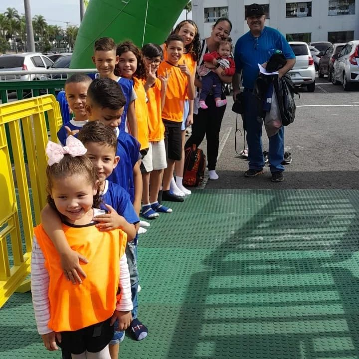
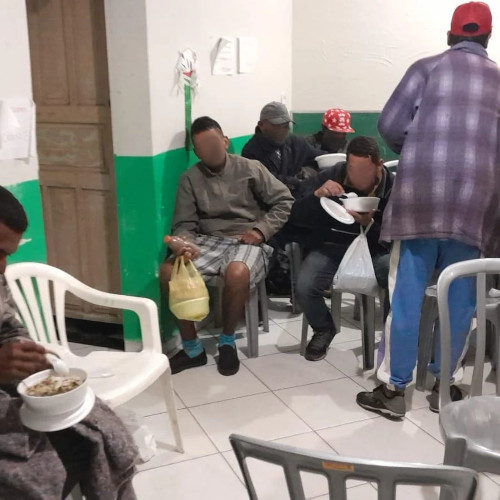

Criança + Q Feliz
Desde 2001 , o ICV(Instituto Corpo Vivo) desenvolve um projeto chamado Criança + Q Feliz, voltado para crianças e adolescentes, levando sempre uma palavra de fé, esperança e amor, injetando em seus corações que há um futuro brilhante que elas podem criar, com mais qualidade de vida e amor, pois ajudando as crianças de hoje, teremos adultos melhores amanhã!

Projeto SSS - Sopa, sabão, salvação.
Neste projeto são disponibilizados roupas limpas, sabão, toalha e um local para que quem precisa possa tomar um banho. Logo em seguida é oferecida uma refeição saudável e saborosa.
O projeto ocorre normalmente quarta às 18h e domingo às 8h.
